考古
成都文物考古研究院 · 走进考古发掘现场 · 《考古成都》
成都的过去，很大一部分还埋在地下。跟着发掘领队走进正在发掘的遗址：十万年前的石器旁，鱼凫古城的城垣下，汉晋崖墓的墓门口，唐宋市镇的车辙边。影片《考古成都》讲的，是这座城的历史怎样被一铲一铲找回来。
看考古研学 Chengdu, since 2014
Chengdu, since 2014
读一座城，把它讲给更多人听。
巴蜀人文的研究、影像、出版与现场。
东周社，成都，自 2014。做两件事：温故知，读过的地方、物与人；做将来，正在做的新讲法。
01
巴蜀文化说起来很大，落到实处，是一条街、一座桥、一道堰、一桌酒。所以我们一处一处地读。
锦工织锦，濯其江中则鲜明，濯他江则不好。故命曰「锦里」也。
《华阳国志·蜀志》
锦江的名字，是濯锦濯出来的；江边的日子，是织出来、酿出来、摆出来的。杜甫登楼望见的正是这条江：“锦江春色来天地，玉垒浮云变古今。”（杜甫《登楼》）如今水井街地下还埋着几百年前的老酒坊，大慈寺守在闹市中间，菱窠是李劼人的家，茶馆里的龙门阵一摆就是一下午。
品锦江从这些街巷、老字号和人物讲起：节目走进老街；读书会开进水井坊博物馆、李劼人故居和东门市井的龙门阵剧场，每场一个题目；每一季的讲述，最后收进《品锦江——又见成都》，书里扫码，就能看到那一集。
看品锦江山岭千重拥蜀门，成都别是一乾坤。五丁不凿金牛路，秦惠何由得并吞。
胡曾《咏史诗·金牛驿》
金牛是成都向北出发的地方。相传秦王造石牛，谎称牛能屙金，蜀王派五丁力士开山迎牛，金牛道由此得名。城北升仙桥边有座送客观，司马相如从这里去长安，临行题下一句：“不乘赤车驷马，不过汝下也。”（《华阳国志·蜀志》）桥后来就叫驷马桥。两千多年后，宝成铁路从火车北站向北穿过秦岭，铁路人家在这一带安了家，老成都人管这片叫“铁半城”。如今金牛又多了四个半城：文半城、建半城、赛半城、星半城。
《行走“金牛五半城”》五集纪录片，从五丁开山的金牛道，一直走到今天的赛场与星空。《大道金牛》则把金牛的文脉编成了一部成都文化志。
看五半城桂湖老桂发新枝，湖上升庵旧有祠。一种风流谁得似，状元词曲罪臣诗。
汪曾祺《北京的秋花》
新都的“新”，是相对古蜀旧都郫邑说的。相传开明氏在这里另立都邑，后来才迁往成都。城里有宝光寺，有桂湖；湖边的升庵祠纪念明代状元杨升庵，相传环湖的桂树是他少年时种下的。汪曾祺谒升庵祠时写过一首诗，头一句是“桂湖老桂发新枝”。老桂发新枝，说的是桂，也像是在说这座城：两千多年前它是新的都邑，如今又新了一回。
《新新都》在节目里讲、在书里写的，就是它的旧迹与新貌。《以荷为桂》在桂湖与升庵祠取景，读朱自清、叶圣陶、阿来、汪曾祺笔下的荷与桂。
旱则引水浸润，雨则杜塞水门，故记曰：水旱从人，不知饥馑，时无荒年，天下谓之「天府」也。
《华阳国志·蜀志》
都江堰这个名字，起先属于一道堰，后来才给了一座城。李冰在岷江上筑堰，鱼嘴分水，飞沙堰排沙，宝瓶口引水入川西平原，天府之国由此而来。安澜索桥横在江上，风一吹就轻轻晃。水流到哪里，日子就长到哪里：田间一丛丛竹林围着院落，是川西林盘；青城山天师洞的古银杏，陪着道观过了上千年；柳街的庄稼人结了诗社，写自己的诗。
《遇见都江堰》把镜头对准这里的水与人，从林盘、银杏讲到盆景；《都江堰不是一座城》用文字再走一遍，走的是一道堰、一江水，和它养活的田园。
读《都江堰不是一座城》帝升西山隐焉。时适二月，子鹃鸟鸣，故蜀人悲子鹃鸟鸣也。
《华阳国志·蜀志》
望帝杜宇教民务农，都邑就在郫；丛帝鳖灵治水，二帝同祀的望丛祠至今还在。郫县豆瓣被称作川菜之魂。
《西有郫都》讲它的来处，《爱上郫都100个理由》从古蜀写到豆瓣，再写到今天的生态之城。
《爱上郫都100个理由》 · 郫都古城形象片
有金堂山，水通于巴。
《华阳国志·蜀志》
“金堂”在道家是仙人修炼的处所，相传李八百在山中修道，山便叫金堂山；唐代置县，又以山为名。东晋常璩写《华阳国志》，已经记下这座山和山下往巴地去的水。成都平原的水在这里收拢：北河、中河、毗河在赵镇汇成沱江，一路南下，在泸州汇入长江。三学山上有古寺和八万四千塔；成都学者流沙河生在金堂、长在金堂，欣题“和美金堂”四字；抗美援朝上甘岭战役的一级战斗英雄胡修道，也是金堂人。
《和美金堂》讲的，就是这片山水和山水里的人。
（李冰）乃至湔氐县，见两山对如阙，因号天彭阙。
《华阳国志·蜀志》
彭州古称天彭。陆游写《天彭牡丹谱》，开篇就说：“牡丹在中州，洛阳为第一；在蜀，天彭为第一。”湔江从龙门山里流出来，西汉蜀守文翁开湔江口引水灌田，又在成都立学，治水与兴学，是他留下的两件大事；如今彭州的石室湔江学校，把这两件事写进了同一个校名。
「爱读派·阅彭州」的读书会，就从牡丹谱和湔江这些题目讲起。
篇目（选） 二李丰碑 · 天彭牡丹谱，陆游的秘密 · 湔江展卷：文翁的治水与兴学
万里桥架大江水，在县南八里。蜀使费祎聘吴，诸葛亮祖之。祎叹曰：「万里之路始于此桥！」因之为名。
李吉甫《元和郡县图志》
武侯区的名字来自武侯祠。诸葛亮生前封武乡侯，死后谥忠武侯，后人便称他武侯。城南老南门原有一座万里桥：费祎出使东吴，诸葛亮在这里为他饯行，费祎叹了一句“万里之路始于此桥”，桥就有了名字，后来被称作“成都第一桥”。成都因水而兴，有水就有桥。
《阅·武侯》从桥读起，读这座城南的来历。
篇目（选） 百桥如虹
八月剥枣，十月获稻，为此春酒，以介眉寿。
《诗经·豳风·七月》
高县在宜宾南边的丘陵里。这里的正月，是一桌一桌吃出来的：从初一到十五，亲友邻里互相请吃春酒，一餐分三台，先吃茶食，再喝酒，最后上正席；请长辈要下请帖或登门去请，礼数一样不能少。这个习俗在川南传了几百年，“春酒”两个字，《诗经》里就有。说是请酒，请的是人。
《自在高县》跟着春酒走进川南人家，从宴席讲到人情，再讲到离家的人放不下的故土。
篇目 《自在高县》 有宴名请春 · 酒香情亦浓 · 故土常思怀
02
把库房和探方里的东西，把祠堂与草堂里的人，讲给更多人听；也把成都讲给远方的朋友。
成都文物考古研究院 · 走进考古发掘现场 · 《考古成都》
成都的过去，很大一部分还埋在地下。跟着发掘领队走进正在发掘的遗址：十万年前的石器旁，鱼凫古城的城垣下，汉晋崖墓的墓门口，唐宋市镇的车辙边。影片《考古成都》讲的，是这座城的历史怎样被一铲一铲找回来。
看考古研学成都市文物信息中心
一集只讲一件文物：十节玉琮、成都矛、草堂的宋版书。金沙、武侯祠、杜甫草堂、成都博物馆与永陵的库房，为镜头一件件打开，讲它从哪里来，又怎样留到了今天。
成都武侯祠博物馆
祠里的一碑一像，都有来历。先讲蜀汉往事，再讲历代碑刻，再讲清代彩塑，由馆内学者出镜，把三国的故事落到一块碑、一尊像上。
看三季节目成都杜甫草堂博物馆
杜甫在成都的那几年，是他一生少有的安稳日子，浣花溪边的草堂，留下了他最家常的诗。《读读杜诗》每期读一首，配上笺注，再请当代诗人次韵、书法家书写；《杜甫的成都声音》在草堂书院开讲，诗、书、画、印与朗诵交织。
对外交流 影片与活动
对外的内容，东周社也做：《家在成都》《友城》《不亦乐乎——四川国际友城四十年》这样的影片，裴多菲诞辰二百周年诗歌诵读会这样的活动。把成都讲给远方的朋友，也把远方的诗读给成都听。
也做过
03
在书店、博物馆、剧场里，也在油菜花田和安澜索桥上。有茅盾文学奖得主谈杜甫的成都，有故宫学者讲国宝南迁，也有两位史家隔着百年对读成都。
01 / 20
品锦江读书会 展板
一座城市的文化密码——红星路的前世今生
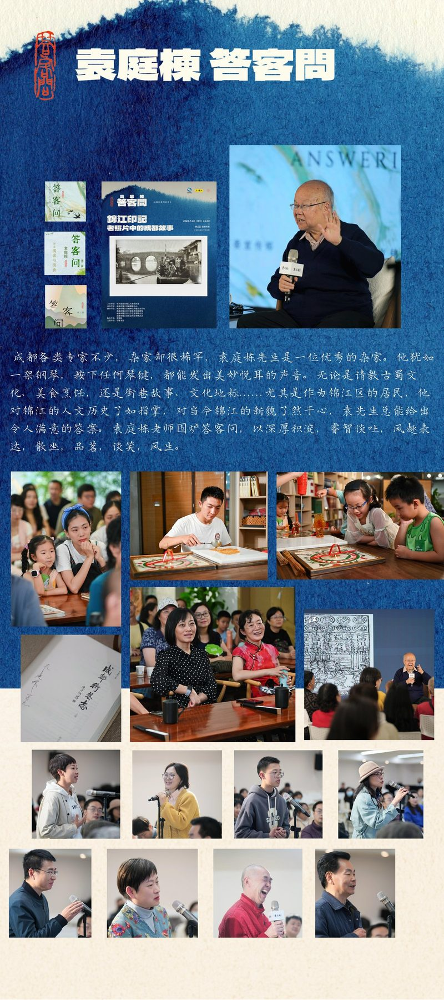
袁庭栋·答客问
锦江·诗酒花
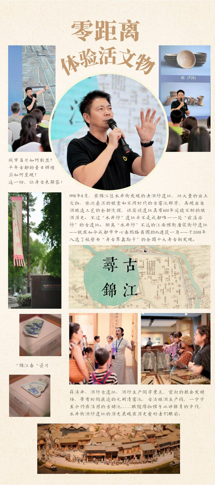
寻古锦江
艺文公开课——成都生活美学
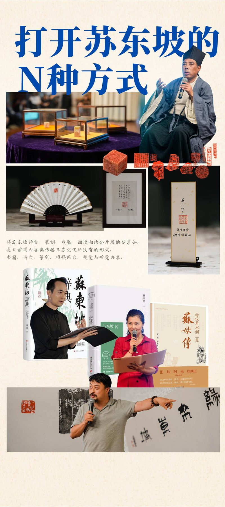
打开苏东坡的N种方式
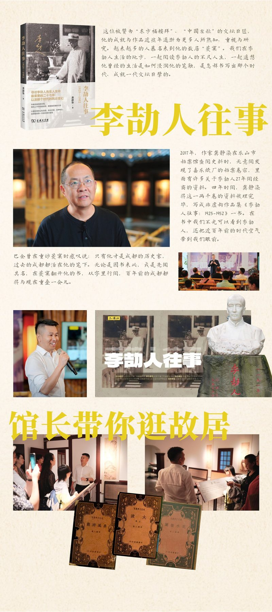
李劼人往事
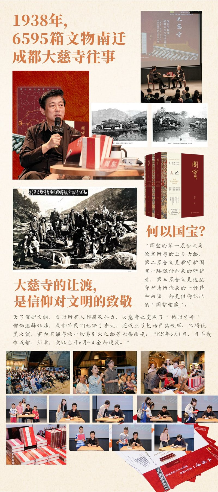
大慈寺：故宫文物的战时方舟
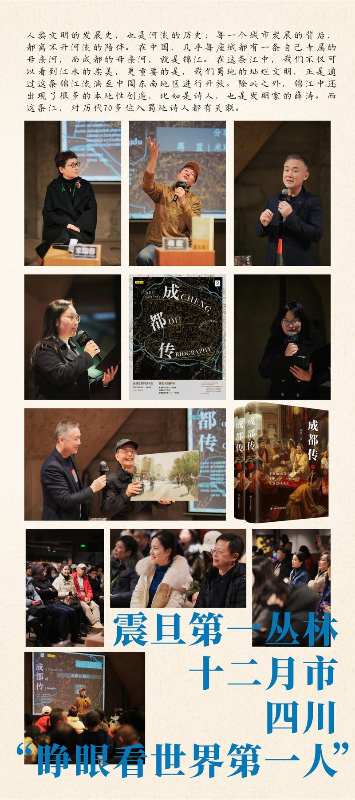
蒋蓝的《成都传》
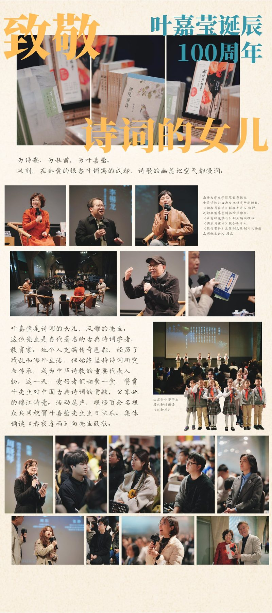
叶嘉莹的锦江诗意
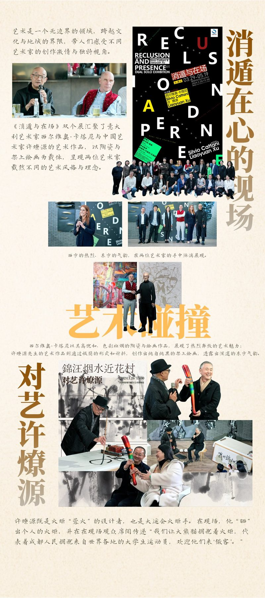
对艺许燎源 · 消遁与在场
诗与文的幅面
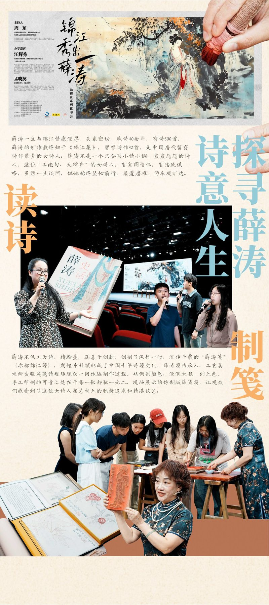
锦江秀出一薛涛
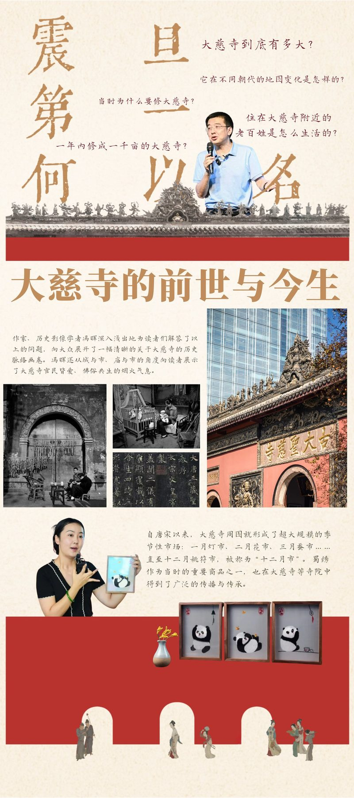
震旦第一何以名
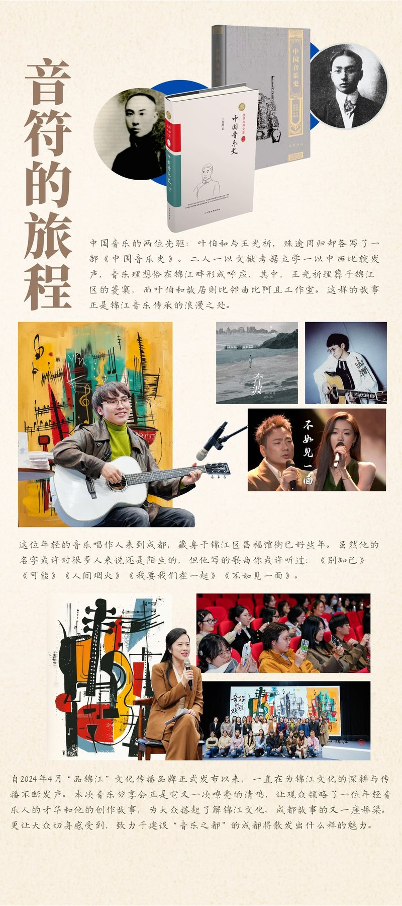
音符的旅程
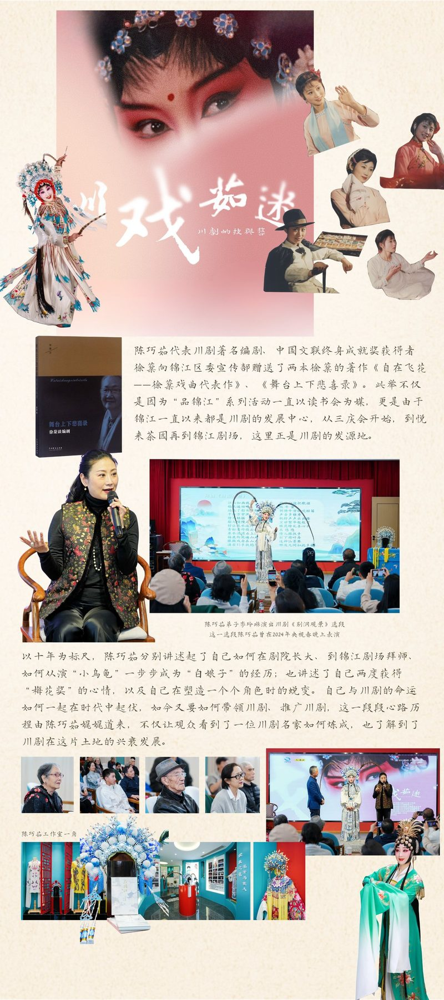
川戏茹迷
从星空里出发
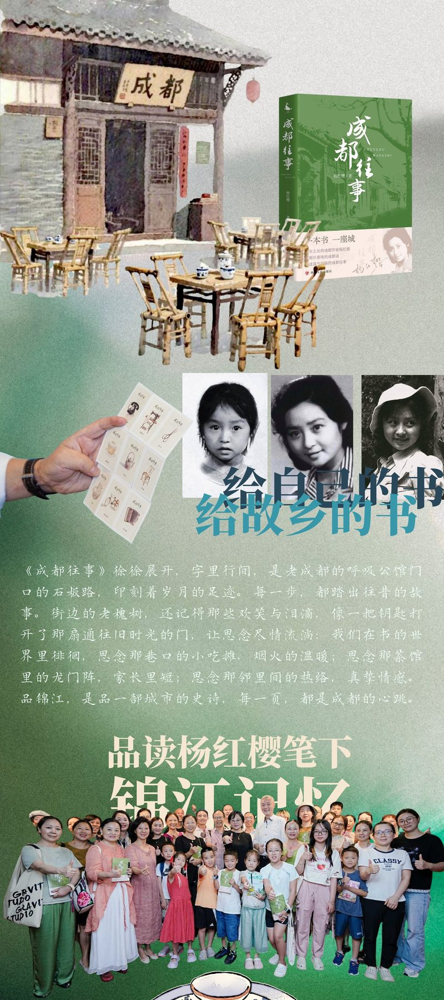
往事知多少
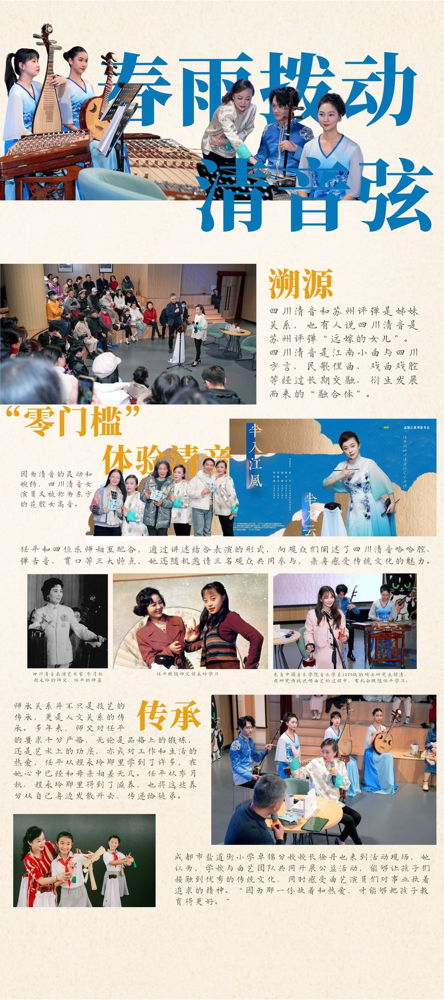
半入江风半入云
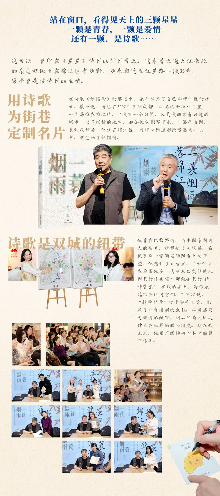
一蓑烟雨落锦江
李铣 李永才 赵晓梦 李斌 尚仲敏
以蜀道与蜀城为题，诗人们带着写金牛坝、驷马桥、曹家巷的诗，来到驷马桥边的东周社艺文美空间。海光、姚东伯、王安冉诵读，周东主持。
爾來四萬八千歲，峽谷與峻嶺懸掛的日月星辰，以川陝方言解讀險象，三千年典籍。線裝的蜀道巨著，章節迴旋、跌宕，在秦嶺、巴山、岷山褶皺裏，雨雪滋潤山清水秀，雷電席捲金戈鐵馬。深澗、峰巒、關隘、棧道，斷壁上鑿石的回聲，勾連長安與成都的打望。秦王蜀王各自懷揣的心思，比古羅馬大道石頭與石頭的銜接，更久遠，更抒情。詩仙李白留在蜀道上的噫吁嚱，一聲喟嘆驚為天籟。
茶店子名號一百多年前，還是路邊搭建的幾間茅草棚。一條小路過往清明時節的苦雨淒風，香蠟錢紙和茶水，逗留來去匆匆的行色，家長裏短淡抹了悲歡離合。
蓋碗茶最好的湯色，從清同治年間保留至今。一片茶葉在水面沒有落下來，還惦記古蜀道上的金牛，在戰火和謊言含混的煙雨裏，改寫消息。
荒涼與繁華不能同日而語。茶店子前世與今生，截然不同的版本，誰來讀懂？站在新雨香沁樓頂，向遠二十里也看不見茅草棚，小路匿跡，車水馬龍洶湧。
蒙頂山的酸性土壤長途遷徙，城市裏的茶園長出新芽，魔幻了。茶水倒映的陸羽雕像，很清晰，很淡定，茶店子供奉茶的祖宗自然而然，在這裏，《茶經》是不是遺漏了章節？
茶店子很多，同名同姓不足為怪，而《成都縣志》定位的茶店子，在成都以西，無論怎麼改變它的模樣，素顏與濃妝都在一碗茶裏，很多悄悄話，很多隱秘。
在一路向北的匆行步履中誰的草鞋，還殘留妻的溫存從燈滅到天明？
飢餓的行囊裏有盛不下的母親的叮嚀過橋剎那，是誰忽然脫下軍帽朦朧雙眼仰映藍雁歸家的隊形
髮絲漫舞，鋼槍靜默，竟不知哪一行淚水是秋風的倒影「過了這座橋，還能回來嗎？」
身後，少城公園的誓師已落塵。身後東城門洞的歡呼已消停身後，已是萬家燈歇的雨聲
不期待與誰擦肩而過可一座橋的兩端竟有兩千年的對視迎面，陸游的劍門瘦驢來也迎面，子美帶著鹿頭山的風霜來也，迎面曾在此橋「題柱表壯節」的相如來也——直駕高頭駟馬回回來又怎樣？大刀變成泥斗笠變成風？那雙草鞋啊變成銅塑雕像後融成垃圾汩汩付東流
此刻，方知胸前的鋼筆沒有背荷的大刀重要此刻，足下的泥濘定不及中原的焦土焦心此刻，無暇回望橋南那虛幌未乾的淚痕無論東門廣場紀念碑的底座誰來奠基無論誰在等待戰場衝鋒的英姿將草鞋石刻成詩，或銅雕成像
遠處那秦腔的黃土呻吟那豫聲的鐘鼓驚慌蜀的北方的樹啊正凋零
步履無聲而四川分明聽見三百五十萬人寫成的川軍三字大賦，已然鏗鏘「何須回！」
於是成都聽見「我本成都少年郎，我扛槍的肩膀荷著母親的疲憊」於是駟馬橋聽見「我不乘駟馬我待戰馬裹屍回！」
金牛詩會詠蜀道 · 寫成都
来过的人
读书会、诗会、论坛、节目与书，排名不分先后
作家与诗人
阿来 杨红樱 蒋蓝 周啸天 舒婷 梁平 洁尘 岱峻 何大草 王鹤 马平 何小竹 凸凹 王国平 吴晓晖 龚静染 冯晖 萧易 庞惊涛 嘉楠 张书林 陈锦 米瑞蓉 谭楷 李铣 李永才 赵晓梦 李斌 尚仲敏 帕特里克·拉佩尔
学者与文博
祝勇 王笛 袁庭栋 孙华 李华瑞 王兆鹏 杨早 潘祥辉 谭平 李怡 唐小林 李锡龙 徐亮工 凌孟华 彭邦本 肖先进 段杨 王龙 王嘉陵 肖平 刘洪 周维扬 刘旭东 梅铮铮 安剑华 李志 谢涛 左志强 黄明 杨波 张志强 汪辉秀
川菜与川酒
杜莉 王胜鹏 张茜 卢朝华 王开发 张中尤 徐良 赵一频 向东 王旭东 龚永泽 彭智辅
戏剧与曲艺
陈智林 陈巧茹 崔光丽 任平 钟燕平 董凡 姚东伯 贾建立 钱滨 曲比阿且
书画与艺术
许燎源 西尔维奥·卡塔尼 梁时民 王民平 彭先诚 秦天柱 张幼矩 刘云泉 谢季筠 黎光成 王雪梅 李中茂 魏葵
播音与主持
敬一丹 鞠萍 陈岳 郭月 张北丽 海光 宁远 任韵陶 王安冉
影视、出版与书店
黄立新 李真真 周平 但捷 武延平 贾晓净 张俊丰
更多领域（体育·外事）
张山 葛凯达 刘德成 刘绥滨 何洁
读过的城、见过的人，接下来要换一种讲法。
04
沿着杜甫一生走过的路：长安、洛阳、秦州、同谷、成都、夔州，一直到湖湘。
诗句在这里是证词，
要拿到现场去对质。
05
一次讲一位巴蜀人物。人物和史料是真的，逐条分级；故事按戏来写。
放弃需要勇气。广政二十七年（964）除夕，孟昶嫌学士拟的桃符词不够工整，亲笔写下这一副。
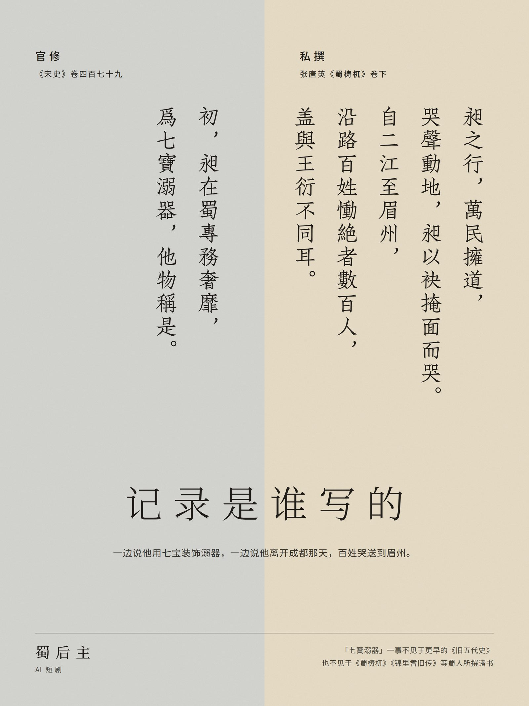
记录是谁写的
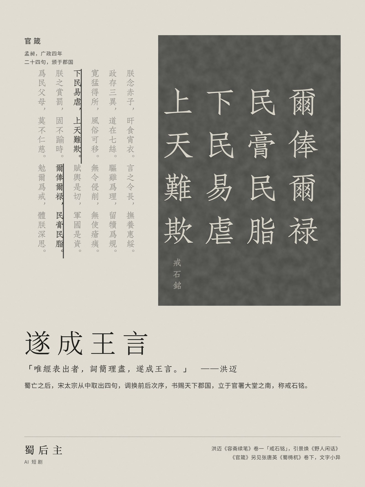
戒石
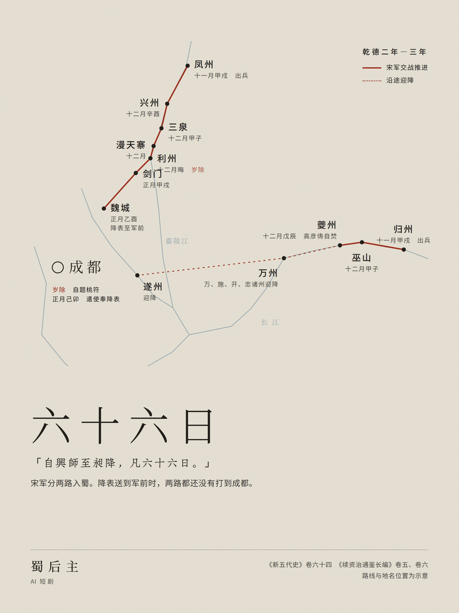
六十六日
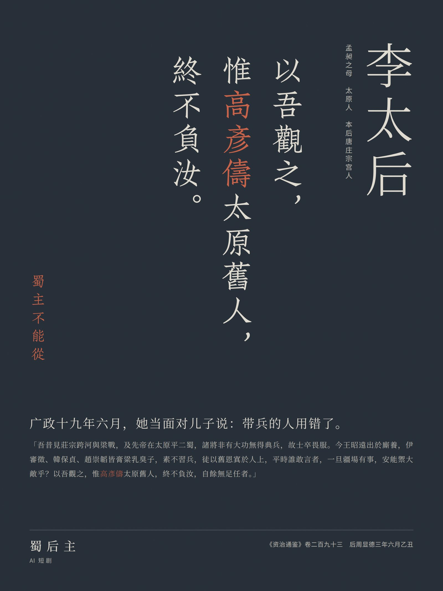
李太后
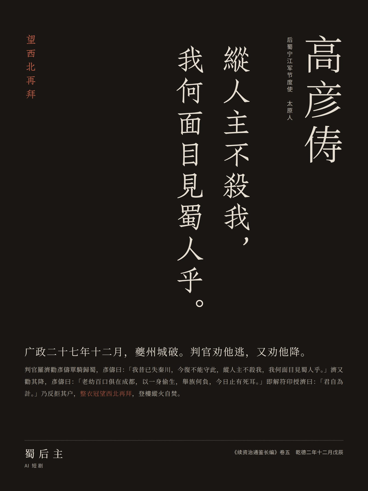
高彦俦
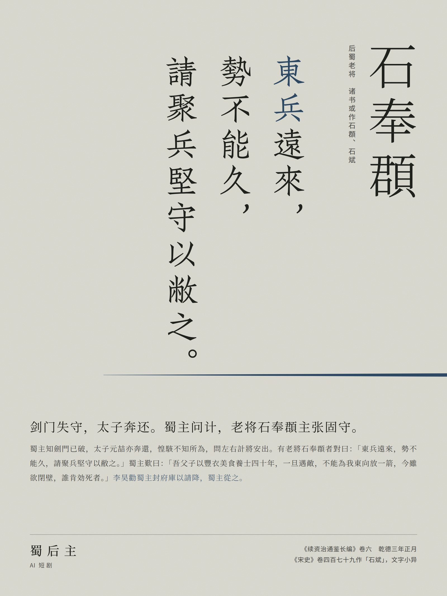
石奉頵
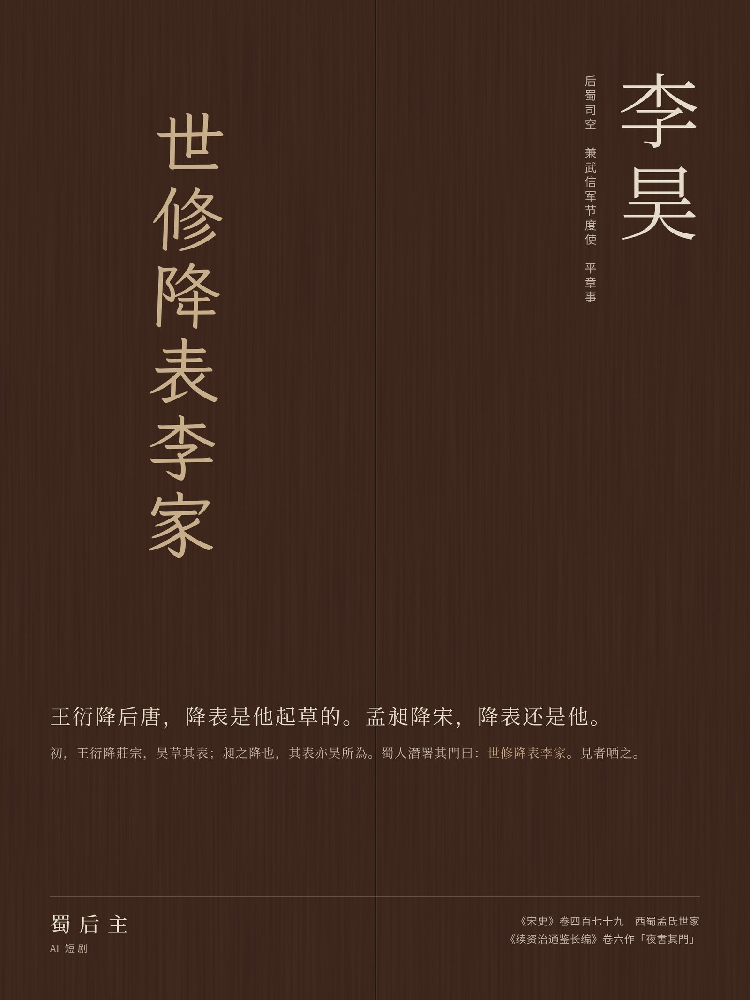
李昊
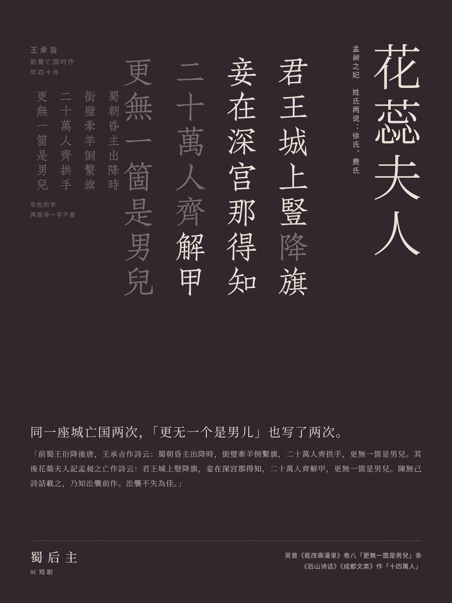
花蕊夫人
06
DONG DONG TUNE
为周东开设的个人频道。
07
东周社创始人 主讲人
三十多年里，他在演播室与田野之间，与众多学者、作家、艺术家对谈。东周社做内容的方法，就从这里来。
郁金香学习社 金牛区驷马桥
领读书房用来读，声音书馆用来讲、用来听，又竹堂留给书画与雅集。
身份
荣誉
同行的机构 主讲人特邀
近期在做
04
行走杜甫
沿着杜甫一生走过的路：长安、洛阳、秦州、同谷、成都、夔州，一直到湖湘。
周东带着自己读了多年的杜甫上路，让道路、地形、史料和路上遇见的人来回答他，有时也难住他。诗句在这里是证词，要拿到现场去对质。我们想遇见的，是一个还没有被写成“诗圣”的人：拖家带口，在乱世里找活路，一路走，一路写。
05
巴蜀人物志 · 第一部《孟昶》
一次讲一位巴蜀人物。人物和史料是真的，逐条分级；故事按戏来写。
广政二十七年（964）除夕，孟昶嫌学士拟的桃符词不够工整，亲笔写下这一副。后人常把它当作最早的一副春联。宋人修史时，这句过年的吉祥话成了亡国的谶语。剧就从这里开始：记录是谁写的。
正史里的孟昶是降王，是奢靡之君。我们想讲另一个孟昶：他没有拿百姓的性命去换一个王朝的体面。被押往汴梁那天，成都百姓沿路相送。
放弃需要勇气。
周东
从警十年，在新闻媒体一线三十一载。上世纪九十年代初加入成都电视台，做过主持人、记者、编导与总制片人，参与创办《今晚800》《新闻背景》《平安成都》《红绿灯》等栏目。三十多年里，他在演播室与田野之间，与众多学者、作家、艺术家对谈。东周社做内容的方法，就从这里来。
社会职务（选）：四川省人民政府文史研究馆特约研究院馆员 · 中国电视艺术家协会主持人专委会副会长 · 四川省传统文化促进会副会长 · 草堂书院特聘专家 · 成都阅读协会副会长 · 四川师范大学、四川传媒学院客座教授